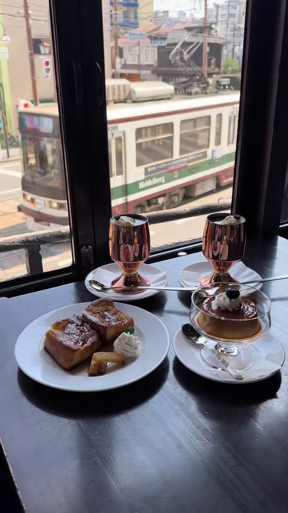
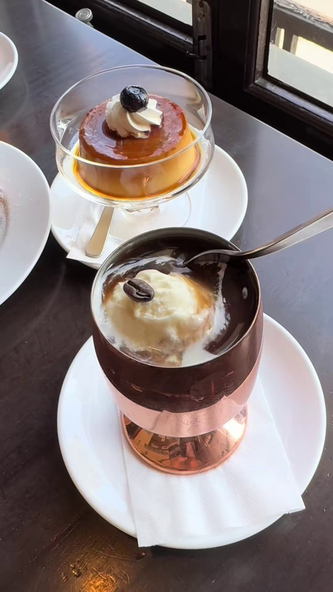

長崎次郎喫茶室
国登録有形文化財である長崎次郎書店の2階に2014年10月にオープン。窓際の席からは市電の姿を見ることができ、レトロな雰囲気の中でコーヒーを楽しむことができます。
基本情報:
- 住所: 熊本県熊本市中央区新町4丁目1-19 (長崎次郎書店2階)
- 電話番号: 096-354-7973
- 営業時間: 11:26～18:00 (ラストオーダー 17:26)
- 定休日: 不定休
ギャラリー


